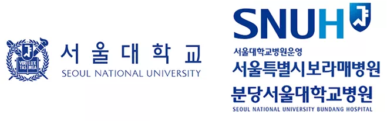
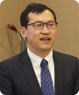

• 시간: 13:30 ~ 14:45(75분)
• 장소: 서울대학교 호암교수회관 삼성컨벤션센터 2층 무궁화홀
프로그램 소개
서울대학교 생명공학공동연구원(Bio-MAX)과 서울대학교 병원(서울특별시보라매병원, 분당서울대학교병원)의 교류증진 및 연구협력을 장려하기 위한 추진사업으로 첨단의료분야 융복합 원천기술 확보를 위해 이공계 과학자(Ph.D.)와 임상 의사(MD)의 상호교류 및 협력연구 기반 조성을 활성화하고 공동연구 수행을 통한 융합연구 촉진 및 실용가능한 연구성과(논문, 벤처창업, 기술이전, 특허출원 등)를 창출하였으며 이를 소개하고자 합니다.
| MD-PH.D 오픈이노베이션 중개연구협력 활성화 프로그램 |
|---|
|  |
|
이공계 과학자(PH.D.)와 임상 의사(MD)의 상호교류 및 협력연구 기반 조성을 활성화 |
|
공동연구 수행을 통한 융합연구 촉진 및 실용가능한 연구성과 창출
논문, 벤처창업, 기술이전, 특허출원 등 |
| 서울대학교 생명공학공동연구원 (Bio-MAX) | 서울특별시 보라매병원 (BMC) |
|---|---|
| Spatial transcriptome analysis of invasive bladder cancer | |

권성원 교수 |
김영아 교수 |
| A Practical Approach to Generative AI in Clinical Settings: From Diagnostic Support to Surgery | |
|
도재영 교수 |
이요한 교수 |
| 자궁내막 오가노이드 기반 공동연구 : 산부인과-수의과 협력의 새로운 가능성 Organoid-Based Translational Model for Endometrial Research |
|
|

장구 교수 |

황규리 교수 |
| 서울대학교 생명공학공동연구원 (Bio-MAX) | 분당서울대학교병원 (SNUBH) |
| 인대·건의 수술적 치료에 활용될 수 있는 비전형적 기계적 물성을 보유한 생체적합성 하이드로젤 | |
|
김정욱 교수 |
성기혁 교수 |
| 정밀 맞춤형 손가락 보조기 제작을 위한 3D 프린팅 플랫폼 개발 | |
|
이호원 교수 |

하유정 교수 |
| 단일 B세포 기반 신속 항체 발굴 플랫폼을 활용한 아데노바이러스 치료 및 예방용 인간 항체 개발 Development of Therapeutic and Prophylactic Human Antibodies against Adenovirus Using a Rapid Single B Cell–Based Discovery Platform |
|
|
정상택 교수 |
최승진 교수 |